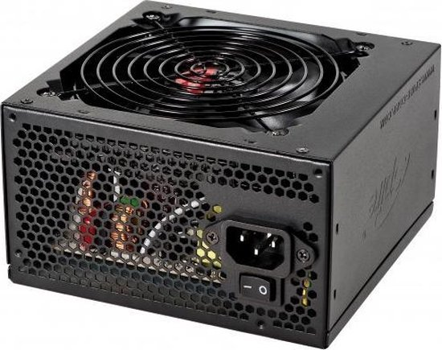
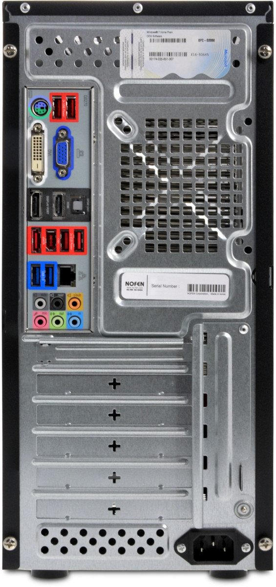
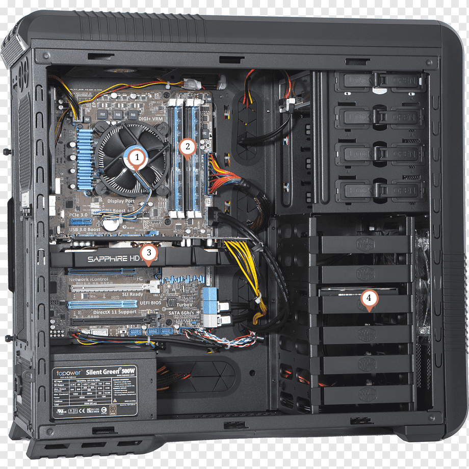
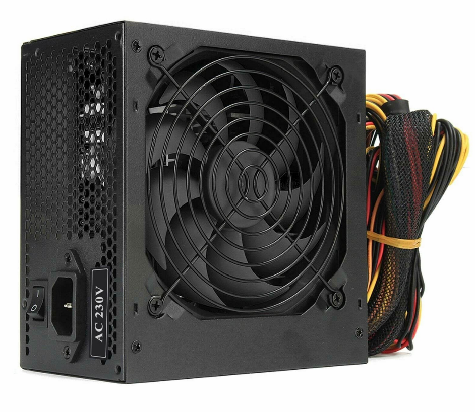
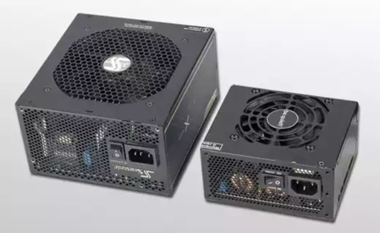
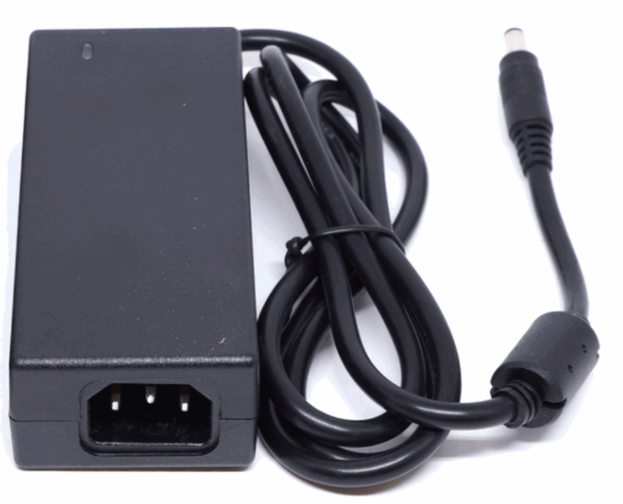
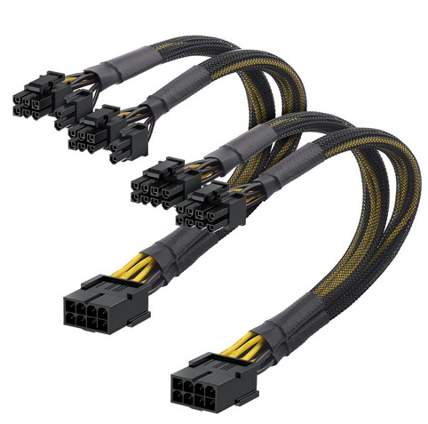
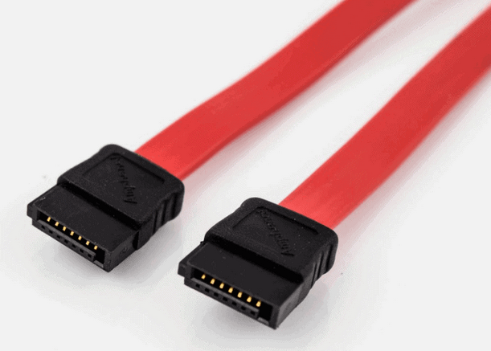
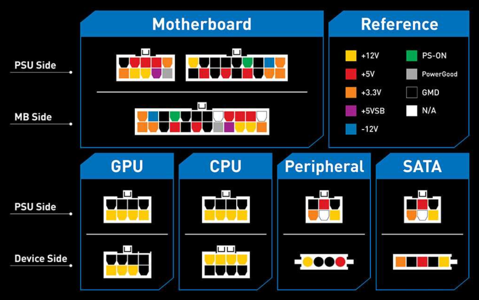

Wordt vaak ook de PSU of Power Supply Unit genoemd.
Hoe ziet een voeding er uit?

Waar zit de voeding?

Waarom kan je een computer niet gewoon rechtstreeks in het stopcontact steken?
Een stopcontact levert wisselstroom (AC).
Computeronderdelen zijn gemaakt om te werken met lage gelijkstroom (DC).
Als je een computer rechtstreeks op het stopcontact zou aansluiten:
- Krijgen onderdelen veel te veel spanning
- Zou de stroom voortdurend van richting veranderen
- Zouden componenten beschadigd raken of doorbranden
Daarom gebruikt een computer een voeding (PSU) die:
- De stroom omzet
- De spanning verlaagt
- De stroom veilig verdeelt
Spanning & vermogen
Wat zijn wissel- en gelijkstroom?
Gelijkstroom (DC)
Bij gelijkstroom stroomt elektriciteit altijd in dezelfde richting.
Dat is stabieler en veiliger voor elektronische onderdelen.
Wisselstroom (AC)
Bij wisselstroom verandert de richting van de stroom voortdurend.
Dit is de soort stroom uit het stopcontact.
In Europa verandert die richting 50 keer per seconde.
Wisselstroom veel praktischer voor:
- Elektriciteit over lange afstanden vervoeren
- Hele steden van stroom voorzien
Wanneer elektriciteit door kabels reist gaat een deel verloren als warmte.
Bij lange afstanden wil je dus zo weinig mogelijk stroomverlies.
Wat zijn spanning en vermogen?
Spanning (Volt)
Spanning geeft aan hoe sterk elektriciteit duwt.
Je kan dit vergelijken met waterdruk in een waterleiding.
Hoe hoger de spanning hoe krachtiger de elektrische stroom kan bewegen.
Vermogen (Watt)
Vermogen geeft aan hoeveel energie een toestel gebruikt of levert.
Je kan dit vergelijken met hoeveel water per seconde door een waterleiding stroomt.
Vergelijking:
- Spanning (Volt) is de waterdruk.
- Vermogen (Watt) is hoeveel water er effectief beweegt.
Een hoge spanning betekent niet automatisch hoog vermogen.
Vergelijk de spanning en het vermogen van deze vergelijkingen:
- Een dun straaltje water onder hoge druk: spanning en vermogen?
- Een grote waterstroom: spanning en vermogen?
Gebruikt een computer AC of DC?
Gelijkstroom (DC)
De voeding zet daarom AC uit het stopcontact om naar DC voor de computer.
Opdracht: Gelijk- en wisselspanning
Download en maak deze oefening: Gelijk- en wisselspanning
Opdracht: Spanningen in een computer
- Hoeveel spanning gebruiken deze componenten?

- Onderzoeksvraag: Waarom zou een videokaart meer stroom nodig hebben dan een USB-stick?
- Wat is het vermogen van deze toestellen?
a. LED-lamp
b. Laptop
c. Gaming PC
PSU efficiëntie
Een voeding haalt 500W uit het stopcontact, maar levert maar 425W aan de computer. Wat gebeurt er met de rest?
De overige energie gaat vooral verloren als warmte.
Geen enkele voeding werkt perfect efficiënt.
Daarom hebben voedingen ventilatoren, koeling, heatsinks.
Waarom hechten datacenters veel belang aan efficiente voedingen?
Datacenters bevatten duizenden computers en servers.
Zelfs kleine energieverliezen worden daardoor enorm groot.
Efficiënte voedingen zijn belangrijk omdat ze:
- Minder elektriciteit verspillen
- Minder warmte produceren
- Lagere elektriciteitskosten geven
- Minder zware koeling nodig hebben
- Beter zijn voor het milieu
Minder warmte betekent ook:
- Minder airconditioning
- Minder risico op oververhitting
- Betrouwbaardere servers
Certificaten
Wat betekent 80 PLUS op een voeding?
80 PLUS is een certificering voor de efficiëntie van een voeding.
Een voeding met 80 PLUS:
- Zet minstens 80% van de energie om in bruikbare stroom
- Maximaal 20% gaat verloren als warmte
Bestaan er 60 PLUS of 70 PLUS voedingen?
Nee. De officiële certificering begint bij 80 PLUS.
Daarna komen:
- Bronze
- Silver
- Gold
- Platinum
- Titanium
Waarom geen 60 PLUS of 70 PLUS?
- 80% efficiëntie vroeger een praktische minimumstandaard werd
- Onder 80% wordt beschouwd als te inefficiënt voor moderne PC’s
- De organisatie (CLEAResult / 80 PLUS programma) heeft nooit lagere tiers toegevoegd
Een voeding zonder certificaat kan dus 60%, 70% of 75% efficiënt zijn maar die mag zich gewoon geen 80 PLUS noemen.
- 80 PLUS: start van certificering
- Alles daaronder: geen certificaat
Kiezen tussen bronze, silver, gold ... wat is het verschil echt?
De 80 PLUS certificaten zeggen niet hoeveel vermogen een voeding levert, maar hoe efficiënt ze energie omzet.
Een voeding haalt stroom uit het stopcontact (AC) en zet die om naar DC.
Niet alles wordt nuttige stroom, een deel gaat verloren als warmte.
Voorbeelden bij een PC die 500W nodig heeft:
- 80 PLUS Bronze (~82% efficiënt)
- Uit stopcontact: ~
610W - Verlies: ~
110Wwarmte
- Uit stopcontact: ~
- 80 PLUS Gold (~90% efficiënt)
- Uit stopcontact: ~
555W - Verlies: ~
55Wwarmte
- Uit stopcontact: ~
- 80 PLUS Platinum (~92–94%)
- Uit stopcontact: ~
535W - Verlies: ~
35–45Wwarmte
- Uit stopcontact: ~
Bronze
- Goedkoper
- Meer warmte
- Iets hoger verbruik
Gold
- Beste balans
- Standaard voor gaming PC’s
- Minder warmte, stiller
Platinum & Titanium
- Zeer efficiënt
- Minder koeling nodig
- Vaak in servers of high-end systemen
Efficiëntie verandert NIET hoeveel je PC kan gebruiken, WEL hoeveel energie je uit het stopcontact trekt
Soorten voedingen
ATX voeding (standaard PC voeding)
ATX voedingen
De meest gebruikte voeding in desktopcomputers.
Kenmerken:
- Grote rechthoekige voeding
- Past in standaard PC cases
- Heeft vaste kabels of modulaire kabels
- Levert meerdere spanningen (
+12V,+5V,+3.3V)

Wordt gebruikt in:
- Gaming PC’s
- Kantoorcomputers
- Workstations
SFX voeding (kleine PC’s)
SFX voedingen
Een kleinere versie van ATX.
Kenmerken:
- Compact formaat
- Voor mini-PC’s
- Minder vermogen mogelijk
- Vaak duurder per watt

Wordt gebruikt in:
- Mini ITX builds
- Kleine gaming setups
Laptop voedingen (extern)
Laptop adapters
Laptop voedingen zitten buiten de computer.
Kenmerken:
- Zet AC om naar DC buiten de laptop
- Vaak
19Voutput - Compact maar krachtig
- Specifiek per laptopmodel

Nadeel:
- Niet universeel
- Vaak moeilijk te vervangen
Hoe kies je een voeding
Stap 1: Hoeveel vermogen heb je nodig?
Een voeding moet genoeg vermogen leveren voor alle onderdelen samen.
In de praktijk verbruiken onderdelen niet altijd maximaal tegelijk, maar je moet er wel vanuit gaan dat dit kan gebeuren.
Typisch verbruik per onderdeel:
- CPU (processor)
65W tot 150W
Krachtige CPU’s (gaming/rendering) verbruiken meer - GPU (videokaart)
100W tot 400W+
Dit is meestal het grootste verbruik in een PC - Moederbord + RAM + opslag
30W tot 80W
Relatief stabiel en laag verbruik - Andere (fans, USB, RGB, etc.)
10W tot 30Wextra
Veiligheidsmargage
Tel alles samen en voeg 20–30% marge toe.
Waarom?
- Componenten kunnen pieken (kortstondig meer verbruik)
- Voeding werkt efficiënter rond 50–70% belasting
- Je voorkomt dat de voeding constant op maximum draait
Stap 2: Efficiëntie kiezen
- 80 PLUS Bronze: basis
- 80 PLUS Gold: standaard gaming PC
- 80 PLUS Platinum: high-end / servers
Meer efficiëntie = minder warmte en verbruik
Stap 3: Aansluitingen controleren
Een voeding is niet alleen een kwestie van genoeg Watt hebben.
Je moet ook genoeg juiste kabels en aansluitingen hebben voor je onderdelen.
Dit zijn de belangrijkste kabels:
- PCIe kabels voor GPU

- SATA kabels voor SSD/HDD

- CPU power (8-pin of 4+4 pin)
Niet alle kabels van een voeding gaan naar dezelfde plaats.
Sommige kabels gaan eerst naar het moederbord, andere gaan rechtstreeks naar onderdelen.
- De CPU krijgt zijn stroom via een aansluiting op het moederbord
- PCIe kabel (GPU): krachtige videokaarten hebben vaak extra stroom nodig. Die kabel gaat meestal rechtstreeks naar de videokaart.
- SATA power (voor SSD’s, HDD’s, RGB controllers, fan hubs, …). Deze kabel gaat rechtstreeks naar het apparaat.
- RAM gaat via het moederbord

Veelgemaakte beginnersfouten:
- Denken dat alle voedingen dezelfde kabels hebben
- Vergeten GPU kabels te tellen
- Niet checken hoeveel SSD’s/HDD’s je hebt
Oefening: Kies een voeding
Je bouwt een PC met:
- Ryzen 5 CPU
95W - RTX 4070
200W - 2 SSD’s
- 1 moederbord + RAM
Vragen:
- Schat totaal verbruik
- Welke voeding (Watt) kies je?
- Welke efficiëntie (Bronze/Gold/Platinum)?
- Waarom is
500Whier waarschijnlijk te weinig?
Veiligheid
Waarom kan een voeding gevaarlijk zijn?
Een voeding werkt met netspanning 230V.
Risico’s:
- Elektrische schok
- Condensatoren blijven geladen (zelfs uit!)
- Kortsluiting bij slechte kabels
Wat mag je nooit doen?
- Een voeding openen
- Kabels aanpassen zonder kennis
- Een voeding gebruiken met beschadigde kabels
- Een PSU testen zonder behuizing of bescherming
Quiz
Waar of niet waar?
Een voeding zet gelijkstroom (DC) om naar wisselstroom (AC)
Niet waar
Een voeding doet net het omgekeerde.
- Een stopcontact levert wisselstroom (AC).
- Computeronderdelen werken op gelijkstroom (DC).
De voeding zet dus AC om naar DC
Een voeding is veilig zodra de PC uit staat
Niet waar
Een PC uitschakelen betekent niet dat de voeding volledig "leeg" of veilig is.
Wat gebeurt er echt?
- De PC staat uit, maar de voeding blijft verbonden met
230Vstopcontact - Binnenin de PSU zitten condensatoren, die kunnen nog kort energie opslaan
Gevolg:
- Je kan nog steeds een elektrische schok krijgen
- Daarom is "uit" niet hetzelfde als "veilig"
Altijd de stekker uit het stopcontact halen voor je aan een voeding werkt
Een krachtigere voeding maakt je computer sneller
Niet waar
Een voeding levert alleen het vermogen dat onderdelen nodig hebben.
Een 600W vs 1000W voeding maakt je PC niet sneller als allebei voldoende zijn voor je systeem.
De voeding ‘duwt’ geen extra prestaties in je onderdelen.
De voeding zorgt enkel dat:
- genoeg energie beschikbaar is
- de spanning stabiel blijft
- onderdelen veilig kunnen werken
Als je voeding **te weinig vermogen heeft:
- kan je PC uitvallen onder load (gaming, renderen)
- kan de GPU/CPU niet op volle snelheid draaien (throttling)
- kan het systeem instabiel worden
In dat geval lijkt het alsof je PC trager is, maar dat komt niet door minder snelheid van de voeding zelf, wel door bescherming of instabiliteit van het systeem.
Een voeding met hogere efficiëntie verspilt meestal minder energie
Waar
Een efficiëntere voeding:
- produceert minder warmte
- verbruikt minder elektriciteit
- werkt vaak stiller
Created: 11/05/2026